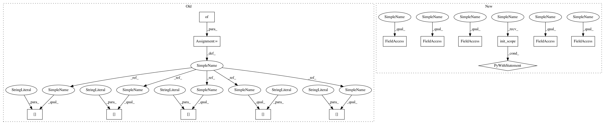

dd0f68a02596d0e1818b9993c02db5b004cb38e3,chainerrl/links/mlp_bn.py,MLPBN,__init__,#MLPBN#Any#Any#Any#Any#Any#,30
Before Change
self.normalize_input = normalize_input
self.normalize_output = normalize_output
layers = {}
if normalize_input:
layers["input_bn"] = L.BatchNormalization(in_size)
layers["input_bn"].avg_var[:] = 1
if hidden_sizes:
hidden_layers = []
hidden_layers.append(LinearBN(in_size, hidden_sizes[0]))
for hin, hout in zip(hidden_sizes, hidden_sizes[1:]):
hidden_layers.append(LinearBN(hin, hout))
layers["hidden_layers"] = chainer.ChainList(*hidden_layers)
layers["output"] = L.Linear(hidden_sizes[-1], out_size)
else:
layers["output"] = L.Linear(in_size, out_size)
if normalize_output:
layers["output_bn"] = L.BatchNormalization(out_size)
layers["output_bn"].avg_var[:] = 1
super().__init__(**layers)
After Change
self.normalize_output = normalize_output
super().__init__()
with self.init_scope():
if normalize_input:
self.input_bn = L.BatchNormalization(in_size)
self.input_bn.avg_var[:] = 1
if hidden_sizes:
hidden_layers = []
hidden_layers.append(LinearBN(in_size, hidden_sizes[0]))
for hin, hout in zip(hidden_sizes, hidden_sizes[1:]):
hidden_layers.append(LinearBN(hin, hout))
self.hidden_layers = chainer.ChainList(*hidden_layers)
self.output = L.Linear(hidden_sizes[-1], out_size)
else:
self.output = L.Linear(in_size, out_size)
if normalize_output:
self.output_bn = L.BatchNormalization(out_size)
self.output_bn.avg_var[:] = 1
def __call__(self, x):
h = x
assert (not chainer.config.train) or x.shape[0] > 1
if self.normalize_input:
In pattern: SUPERPATTERN
Frequency: 3
Non-data size: 14
Instances
Project Name: chainer/chainerrl
Commit Name: dd0f68a02596d0e1818b9993c02db5b004cb38e3
Time: 2017-07-06
Author: kataoka@preferred.jp
File Name: chainerrl/links/mlp_bn.py
Class Name: MLPBN
Method Name: __init__
Project Name: chainer/chainerrl
Commit Name: dd0f68a02596d0e1818b9993c02db5b004cb38e3
Time: 2017-07-06
Author: kataoka@preferred.jp
File Name: chainerrl/q_functions/state_q_functions.py
Class Name: FCBNQuadraticStateQFunction
Method Name: __init__
Project Name: chainer/chainerrl
Commit Name: dd0f68a02596d0e1818b9993c02db5b004cb38e3
Time: 2017-07-06
Author: kataoka@preferred.jp
File Name: chainerrl/q_functions/state_q_functions.py
Class Name: FCQuadraticStateQFunction
Method Name: __init__
Project Name: chainer/chainerrl
Commit Name: dd0f68a02596d0e1818b9993c02db5b004cb38e3
Time: 2017-07-06
Author: kataoka@preferred.jp
File Name: chainerrl/links/mlp_bn.py
Class Name: MLPBN
Method Name: __init__